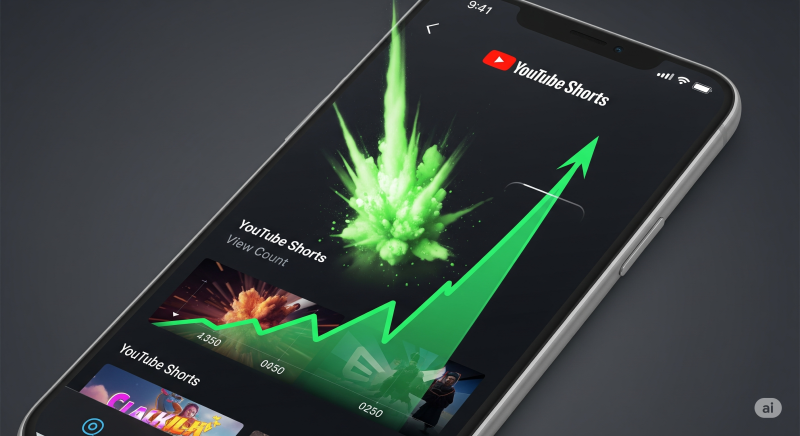

"한 달 동안 중국 웹사이트의 바이럴 영상을 베껴서 새로운 유튜브 쇼츠 채널을 운영하면 어떻게 될까요?" 이 대담한 실험의 결과는 충격적이었습니다. 단 30일 만에 누적 조회수 300만 회, 구독자 10만 명을 달성했기 때문입니다.
최근 유튜브 쇼츠에서 요리나 공예 영상에 흥미로운 스토리를 덧붙인 콘텐츠가 엄청난 인기를 끌고 있습니다. 한 채널은 이런 영상 하나로 4억 4천만 뷰를 기록하기도 했습니다. 이 글에서는 이 성공 공식을 그대로 복제하여, AI를 활용해 누구나 쉽게 바이럴 쇼츠 채널을 만들고 수익화에 도전하는 모든 과정을 단계별로 상세하게 공개합니다.
1단계: 성공 공식 찾기 - 리서치와 전략 수립
모든 성공적인 프로젝트는 철저한 리서치에서 시작됩니다. 무작정 시작하기 전에, 왜 이 틈새시장(Niche)이 매력적인지, 그리고 어떤 콘텐츠가 통하는지 파악해야 합니다.
틈새시장(Niche) 선정: 왜 '이런' 영상인가?
제가 이 틈새시장을 선택한 이유는 간단합니다.
- 엄청난 잠재 시청자: 숫자가 증명하듯, 만족감을 주는 영상(satisfying video)은 국적을 불문하고 엄청난 수요가 있습니다.
- 낮은 진입 장벽: 요리나 제작 기술이 없어도, 다른 사람의 영상에 나만의 해설이나 스토리를 덧붙여 새로운 콘텐츠로 재창조할 수 있습니다.
경쟁자 분석과 성공 패턴 파악
성공적인 경쟁 채널들('Iconic Tales', 'Broken Stories' 등)을 몇 시간 동안 분석하며 공통적인 성공 패턴을 발견했습니다. 바이럴 영상들은 주로 다음과 같은 스토리 유형을 사용했습니다.
- 언더독 스토리: 약자가 역경을 딛고 일어서는 이야기는 희망과 감동을 줍니다.
- 충격적이거나 논란이 있는 스토리: 시청자의 호기심을 자극하고 강한 감정적 반응을 유발합니다.
- 사랑과 배신 스토리: 인간의 보편적인 감정을 건드리는 강력한 주제입니다.
2단계: AI로 콘텐츠 대량 생산하기
성공 공식을 파악했다면, 이제 AI를 활용해 콘텐츠를 효율적으로 생산할 차례입니다.
ChatGPT로 바이럴 스토리 아이디어 & 대본 생성
아이디어 구상부터 대본 작성까지 ChatGPT를 적극 활용합니다. 위에서 찾은 성공 패턴을 기반으로 다음과 같은 프롬프트를 사용할 수 있습니다.
프롬프트 예시:
"유튜브 쇼츠 영상에 사용할 1분짜리 스크립트를 작성해줘. 주제는 '가난했지만 정직함으로 성공한 요리사의 언더독 스토리'야. 도입부에 강한 호기심을 유발하고, 마지막에 감동적인 반전이 있게 해줘."
이런 방식으로 수많은 아이디어와 대본을 손쉽게 생성할 수 있습니다.
AI 음성 생성 및 원본 영상 확보
목소리 출연에 자신이 없어도 괜찮습니다. 다양한 무료 AI 음성 생성 도구를 사용해 생성된 대본을 자연스러운 목소리로 변환합니다. 원본 영상은 조회수와 참여도가 높은 영상을 중국 웹사이트 등에서 찾아 확보합니다. (링크를 복사해 저장)
3단계: 영상을 '내 것'으로 만드는 편집 기술
단순히 영상을 가져와 목소리만 입히는 것은 부족합니다. 시청자의 몰입도를 높이고 저작권 문제를 피하기 위한 '변형(transformation)' 과정이 필수적입니다.
방법 1: CapCut을 활용한 수동 편집 (무료)
무료 편집 앱인 CapCut을 사용한 기본 편집 과정은 다음과 같습니다.
- 새 프로젝트를 만들고 원본 영상과 AI 음성 파일을 불러옵니다.
- 영상 비율을 9:16 (모바일 세로)으로 설정합니다.
- 원본 영상의 소리는 완전히 제거(Mute)합니다.
- AI 음성의 불필요한 공백(pause)을 잘라내어 영상의 속도감을 높입니다. (시청자 유지율에 매우 중요!)
- 영상 길이를 음성 길이에 맞게 조절합니다. (필요시 영상 속도 조절)
- 자동 자막 기능을 사용해 자막을 추가하고, 효과와 효과음을 넣어 영상의 재미를 더합니다.
방법 2: Teza AI로 작업 속도 극대화하기 (유료)
하루에 여러 영상을 제작하며 작업 효율을 높이고 싶을 때, Teza AI와 같은 유료 도구가 강력한 무기가 됩니다. 이 도구를 사용하면 스크립트만 붙여넣으면 자막과 음성이 입혀진 '그린 스크린' 영상을 몇 분 만에 만들 수 있습니다. 이후 CapCut에서 이 그린 스크린 영상과 원본 영상을 합치고, 크로마키 기능으로 배경을 제거하면 편집 시간이 획기적으로 단축됩니다.
4단계: 폭발적인 성장 - 30일간의 실제 결과 분석
이 전략을 꾸준히 실행한 결과는 놀라웠습니다. 특히 Teza AI를 도입해 하루 2개씩 영상을 올리기 시작하자 성장은 가속화되었습니다.
- 초기: 첫 영상은 1,300뷰와 12명의 구독자를 얻었습니다. 이후 몇몇 영상은 수천 뷰를 기록했습니다.
- 성장 가속: 효율적인 방법을 도입한 후, 한 영상이 7만 8천 뷰를 기록하더니, 그 다음 영상은 무려 60만 뷰를 돌파하며 채널을 폭발적으로 성장시켰습니다.
- 주차별 성과:
- 1주 차: 총 71만 뷰 / 2만 9천 구독자
- 2주 차: 총 235만 뷰 / 7만 3천 구독자 (이 주에 160만 뷰 영상이 터졌습니다!)
- 최종 결과 (30일): 총 14개의 영상을 업로드하여 3,072,153 뷰와 103,119명의 구독자를 달성했습니다.
마지막 질문: 그래서 이 채널, 수익 창출이 가능할까?
가장 중요한 질문입니다. 남의 영상을 가져다 썼는데 과연 수익 창출이 가능할까요? 경험에 비추어 볼 때, 대답은 '그렇다'입니다.
핵심은 '변형적 사용(Transformative Use)'입니다.
단순한 '복사 붙여넣기'가 아니라, 원본 영상에 새로운 가치(스토리, 해설, 비평, 교육적 요소)를 더하는 것은 유튜브 정책에서 허용하는 '변형적 사용'에 해당할 가능성이 높습니다. 목소리 해설을 추가하는 것이 바로 이 '변형'의 핵심입니다.
이 실험은 올바른 전략과 AI 도구를 활용하면 누구나 단기간에 유튜브 쇼츠 채널을 폭발적으로 성장시킬 수 있다는 것을 증명했습니다. 처음에는 무료 방법으로 시작하여 채널의 가능성을 확인한 후, 유료 도구를 활용해 효율을 높이는 것을 추천합니다. 여러분도 지금 바로 도전해보세요!